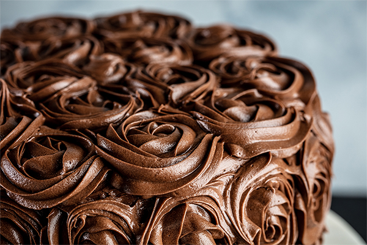

Perfect Chocolate Buttercream Frosting Recipe

Description
The Perfect Chocolate Buttercream Frosting recipe essential for birthday cakes and celebrations! It’s the best chocolate buttercream frosting!
It complements many different cakes and baked goods, but it is best paired with this moist Chocolate Cake Recipe.
Ingredients
For this frosting, you'll need the following ingredients.
- 1 1/2 cups softened butter
- 1/2 cup milk
- 5 cups confectioner's sugar
- 1 cup unsweetened cocoa
- 2 teaspoons vanilla extract
- 1/2 teaspoon espresso powder
- small pinch of salt
- 1 teaspoon water
Instructions:
Add cocoa:
Add cocoa to a large bowl or bowl of stand mixer. Whisk thoroughly to remove any lumps.Cream it up:
Cream together butter and cocoa powder until well-combined.- Add sugar and mil to cocoa mixture by adding 1 cup of sugar followed by about a tablespoon of milk. After each addition has been combined, turn mixer onto a high speed for about a minute. Repeat until all sugar and milk have been added.
Flavour time:
Add vanilla extract and espresso powder and combine well.Assess and serve:
If frosting appears too dry, add a little more milk, a tablespoon at a time until it reaches the right consistency. If it appears too wet and does not hold its form, then add more confectioner's sugar. Add a tablespoon at a time until it reaches the right consistency.